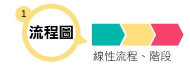
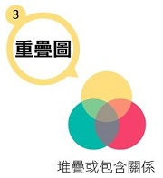
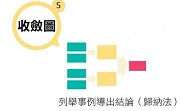
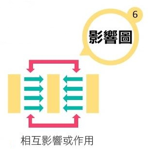
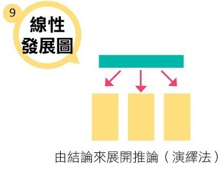

有間科技大廠總經理希望我能夠幫他們在年底準備制定新年度計畫的時候，進行一個創新策略的輔導案，為了了解他們的現狀，我便參加了他們公司的經營會議。
會議一開始，總經理先說明會議的目的，並希望針對公司內部「明年度新市場開發」的議題集思廣益，討論出有效的解決方案。一陣熱烈的討論後，研發部、業務部與管理部始終各持己見，沒有任何結論，眼看會議就要草草收場。我與坐在一旁的產品經理Kell 簡單討論之後，希望Kell 能試著引導大家討論。
這時產品經理Kell 站起來表示，希望能協助大家一起思考，只見他站起來在白板上畫出三個大圖形，正中間是四個象限的矩陣圖，左邊是一種核心往外發展的圖形，右邊是一個流程圖。
大家看著Kell 在畫圖的同時，心裡一時還不知道Kell想做什麼。
畫完後Kell 轉身向大家說明這三張圖的意義，「剛才從各位討論的內容中發現有三個重點，市場、產品應用與流程簡化。於是我畫了三張圖，中間代表市場分類，左邊代表產品應用，右邊代表流程簡化，希望藉由這三張圖呼應這三個重點。」
經過半個小時的討論，藉由圖像式的引導，大家達成了結論。這就是視覺化思考的效果。
我們應該如何訓練自己視覺化思考的能力呢？
平時我們在辦公室中會有大大小小的會議，身為與會者或是會議主導者，我們可以將會議中大家討論的議題或重點試著以圖形畫出來，幫助自己也幫助團隊進行思考。
很多人會覺得自己不會畫圖所以不會視覺化思考，這是因為你認為視覺化思考是畫出一幅漂亮的圖。其實不是，事實上，只要你會畫圓形、方形、三角形與箭頭就可以做到。
以下九種圖形是最常用的圖形，各位可以試著畫畫看：
    製圖 / 張以欣